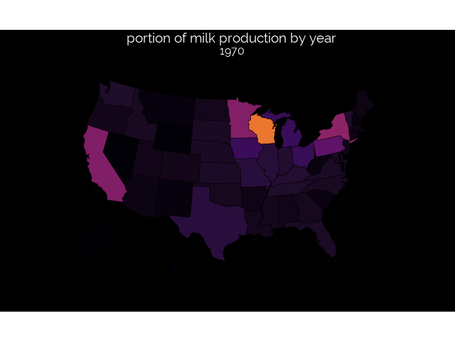

Tidy Tuesday: Milk Production

A simple animated gif map.
library(tidyverse)
## ── Attaching packages ───────────────────
## ✔ ggplot2 3.1.0 ✔ purrr 0.2.5
## ✔ tibble 1.4.2 ✔ dplyr 0.7.7
## ✔ tidyr 0.8.2 ✔ stringr 1.3.1
## ✔ readr 1.1.1 ✔ forcats 0.3.0
## ── Conflicts ─── tidyverse_conflicts() ──
## ✖ dplyr::filter() masks stats::filter()
## ✖ dplyr::lag() masks stats::lag()
require(transformr)
## Loading required package: transformr
library(urbnmapr)
library(gridExtra)
##
## Attaching package: 'gridExtra'
## The following object is masked from 'package:dplyr':
##
## combine
library(gganimate)
library(patchwork)
source('https://raw.githubusercontent.com/tkoomar/ggplot2_themes/master/theme_black.R')
## Loading required package: showtext
## Loading required package: sysfonts
## Loading required package: showtextdb
milk_state <- read_csv("../data/2019/2019-01-29/state_milk_production.csv")
## Parsed with column specification:
## cols(
## region = col_character(),
## state = col_character(),
## year = col_integer(),
## milk_produced = col_double()
## )
## Warning in rbind(names(probs), probs_f): number of columns of result is not
## a multiple of vector length (arg 1)
## Warning: 50 parsing failures.
## row # A tibble: 5 x 5 col row col expected actual file expected <int> <chr> <chr> <chr> <chr> actual 1 1501 year no trailing chara… e3 '../data/2019/2019-01-29/state_mil… file 2 1502 year no trailing chara… e3 '../data/2019/2019-01-29/state_mil… row 3 1503 year no trailing chara… e3 '../data/2019/2019-01-29/state_mil… col 4 1504 year no trailing chara… e3 '../data/2019/2019-01-29/state_mil… expected 5 1505 year no trailing chara… e3 '../data/2019/2019-01-29/state_mil…
## ... ................. ... ........................................................................... ........ ........................................................................... ...... ........................................................................... .... ........................................................................... ... ........................................................................... ... ........................................................................... ........ ...........................................................................
## See problems(...) for more details.
milk_state <- milk_state %>%
rename('state_name' = 'state')
data('states')
milk_map <- left_join(milk_state, states)
## Joining, by = "state_name"
MAKE A MAP
map_plot <- milk_map %>%
group_by(year) %>%
mutate(milk_total = sum(milk_produced),
milk_scaled = milk_produced/milk_total
) %>%
ggplot(aes(x = long, y = lat, fill = milk_scaled, group = group)) +
geom_polygon(size = 0.25, color = 'black') +
coord_map(projection = "albers", lat0 = 39, lat1 = 45) +
scale_fill_viridis_c(option = "inferno")+
#scale_fill_distiller(palette = 'PuBuGn', direction = 1) +
theme_black() +
theme(legend.position = 'none',
axis.text = element_blank(),
axis.ticks = element_blank(),
axis.line = element_blank(),
axis.title = element_blank(),
panel.grid = element_blank()) +
ggtitle("portion of milk production by year", "{closest_state}")
Animate map
map_anim <- map_plot + transition_states(states = year,
transition_length = 5,
state_length = 5,
wrap = TRUE)
anim_save(animation = map_anim,
filename = "final_plot.gif",
width = 640
)
## Warning in lapply(row_vars$states, as.integer): NAs introduced by coercion
## Warning in f(..., self = self): NAs introduced by coercion
The final Plot
Tanner Koomar
PhD Candidate
My research interests include computational genetics, machine learning and science communication